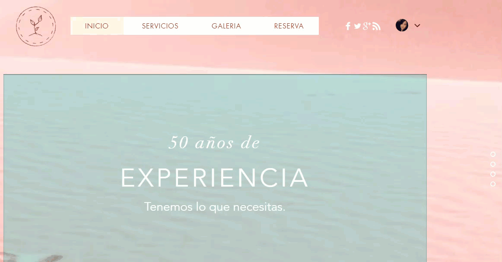
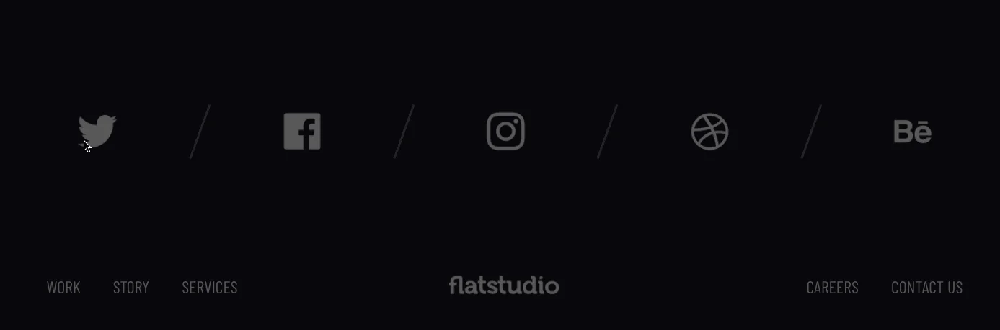

ℙ⅄☈✞ℇℑ - ⅅℇ - ☋ℕÅ - ℙ⅄ʛⅈℕÅ
- Encabezado: El encabezado es la parte superior de una página web. Normalmente, es lo primero que ven los visitantes cuando ingresan a un sitio por lo que debe diseñarse de la manera más clara posible. A menudo se mantiene simple y el contenido debe estar escrito en una fuente clara y legible. Usualmente el encabezado suele aparecer en todas las subpáginas y tiene el mismo diseño en cada una de ellas.

- Menu: El menú es el mapa del sitio que ayuda a los visitantes a encontrar lo que buscan, ya sea la tienda online de tus productos, o alguna información sobre tu empresa. Existen diferentes tipos de menús en una página web, los más comunes aparecen en el encabezado. Por lo general, el menú contiene las subpáginas más importantes, como la página de quiénes somos, la página de contacto y elementos principales como la tienda y el blog.

- Imagenes: Aunque el contenido es muy importante, lo que realmente atrapa la atención de los visitantes son las impactantes imágenes que elijas. Usualmente, son lo primero que ve un usuario después del encabezado, por lo que son esenciales para generar una buena primera impresión. En particular, la primera imagen es la que marca la diferencia entre el éxito (o sea, un usuario que permanece en tu sitio) y el fracaso (un usuario que se va de tu página web).

- Contenido: Por contenido, nos referimos a las palabras escritas y los elementos en tu sitio que explican de qué se trata, qué tiene para ofrecer y por qué es relevante para los visitantes. El contenido de un sitio web cubre una amplia gama de funciones. Desde los párrafos que explican la misión de tu marca o negocio, hasta una sola palabra en los diferentes botones.

- Pie de pagina: En términos sencillos, el pie de página se encuentra en la parte inferior de un sitio web. Normalmente contiene un mapa del sitio, que ayuda a los visitantes a encontrar lo que están buscando. Es el lugar ideal para enlazar a contenido importante que no pertenece al encabezado o al contenido principal, así como información básica de contacto y redes sociales. En el pie de página también puedes incluir una barra de suscripción a tu newsletter, la política de devoluciones para tu tienda online, o preguntas frecuentes.

Tipos de diseño de una pagina web
- Diseño fijo o estatico: Generalmente son sitios en los que no hay mucha interacción y suelen emplearse para transmitir información (un portal de noticias) y en ningún caso para vender (e-commerce) u ofrecer algún tipo de servicio que se deba contratar por la web.
- Diseño dinamico: Se trata de diseños más complejos en los que hay un mayor desarrollo y suponen una mayor inversión para el cliente. A diferencia de los diseños fijos o estáticos, en los dinámicos el usuario puede interactuar con la información que se encuentre en el site. Debido a la cantidad de elementos que tiene, puede tarde más en cargar. Esto puede ser una desventaja o una ventaja, ya que, por otro lado, hace que resulte más atractivo. La clave está en saber qué queremos vender o transmitir.
- Diseño responsive o responsive design: Cada vez más los usuarios acceden a la información a través de distintos dispositivos móviles, de ahí que se haga obligatorio que una página tenga un diseño responsive, es decir, que pueda verse desde un ordenador, una tableta o un teléfono móvil sin importar cuál sea el tamaño de la pantalla.
- Diseño líquido o fluido: Se comporta de manera similar a un diseño responsive, excepto que no manipula el diseño de la página según el tamaño de la pantalla. El diseño en sí reduce o estira toda la página web para que se ajuste al tamaño de la ventana elegida, lo que puede ser útil para las páginas web que no quieren sacrificar información según el tamaño del navegador. Sin embargo, esto también puede causar que el diseño tenga un texto minúsculo o deformado cuando se ve en pantallas que son demasiado pequeñas o demasiado grandes.
- Diseño adaptativo: Se puede llegar a confundir con diseño responsive, pero hay ciertas diferencias que han hecho que el responsive web design le haya ganado el terreno. Y es que el diseño responsive se adapta literalmente mientras que el diseño adaptativo genera un diseño para cada dispositivo: teléfonos móviles, tabletas, desktop… Como su propio nombre indica, ¡se adapta!
Fuentes:
Somos peces voladores (agencia de marketing) Los tipos de diseño web que debes conocer.
WixBlog Las partes de una pagina web.